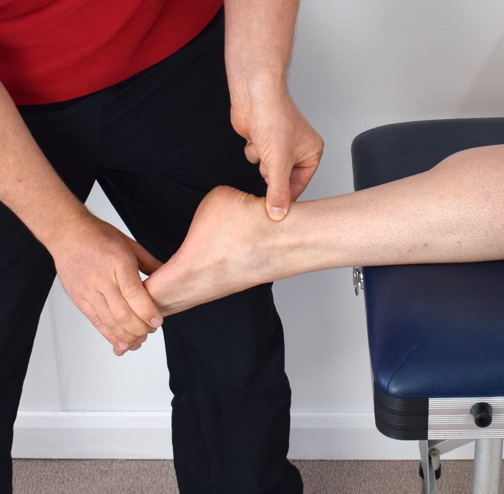
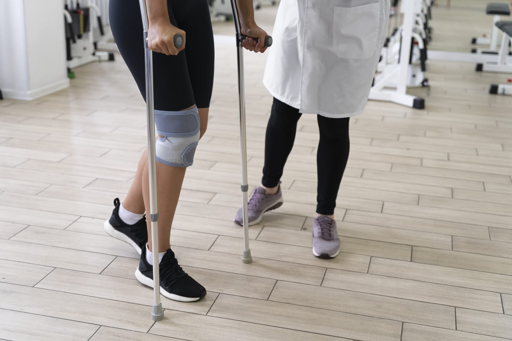
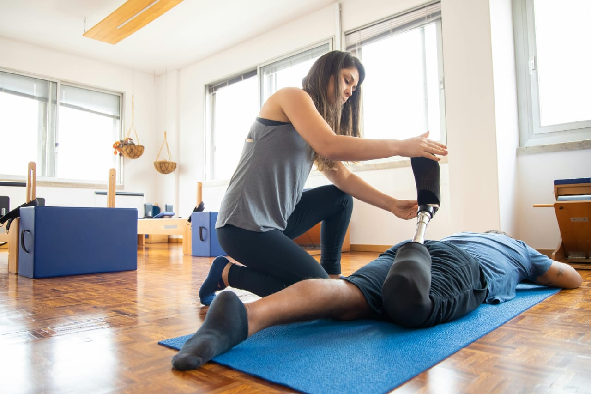
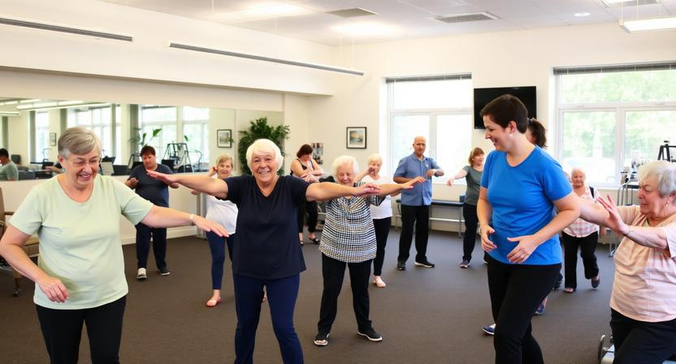
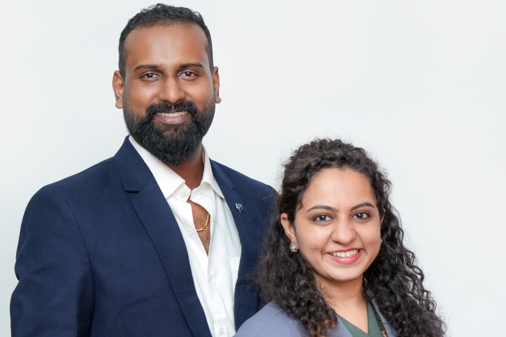

Our Services

ORTHO REHAB
NEURO REHAB
PEDIATRIC REHAB

SPORTS REHAB
PRENATAL AND ANTENATAL REHAB

FUNCTIONAL FITNESS
ERGONOMIC CARE (ERGO FIT)
WEIGHT LOSS AND WEIGHT GAIN
GUT HEALTH

NUTRITION FOR LIFESTYLE DISORDERS

TELECONSULTATION
STRETCH LAB
SPORTS NUTRITION

PRE AND POST SURGICAL REHAB
GERIATRIC REHAB
HOME CARE PHYSIOTHERAPY

GERIATRIC GYM
Treatments
Pain Management
Soft Tissue Mobilization
Manual Therapy
Sports Massage
Dry Needling
Cupping Therapy
Kinesiotaping
Functional Fitness
Cryotherapy
Heat Therapy
Our Founder

Dr. Darshni Thakkar (PT), MPT Neuro, DAPNFSD
Certified in WHO wheelchair, 9+ years of experience, Gold Medalist
Our Experts
Founder: Dr. Darshni Thakkar (PT), MPT Neuro, DAPNFSD, Certified in WHO wheelchair , having 9+ years of experience, gold medalist
Head of Physiotherapy: Dr. Gowtham Kumar (PT), MPT Musculoskeletal and Sports, having 9+ years of experience, gold Medalist
Senior Physiotherapist: Dr. Vaishnavi (PT), having 5+ years of Experience
Senior Physiotherapist: Dr. Mukundhan (PT), having 3+ years of Experience
Gallery
